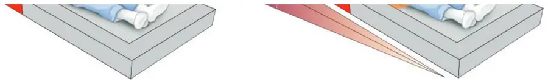
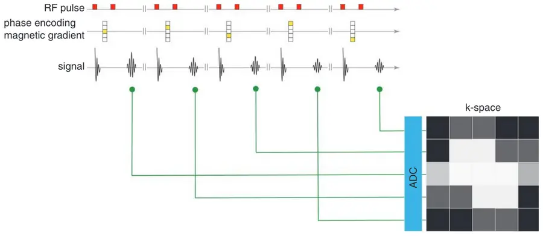

نسخه استخراجشده؛ ترجمه یا تأیید علمی انجام نشده است. وضعیت: captured
MRI یک تکنیک تصویربرداری مقطعی است که بر اصل رزونانس مغناطیسی هستهای (NMR) کار میکند — و برخلاف هر چیزی که تا اینجا خواندهای، هیچ پرتو یونسازی در آن نیست.

و زنجیرهی فیزیکیاش را در چهار جمله بگیر: «یک ذرهی باردار در حرکت، میدان مغناطیسی تولید میکند.»، «وقتی هستهای با اسپین هستهای غیرصفر در میدان مغناطیسی قرار گیرد، شروع به تقدیم میکند.»، «فرکانس تقدیم متناسب با چگالی شار مغناطیسی است.»، «وقتی با موج رادیویی همفرکانس با فرکانس تقدیم تابانده شود، هسته انرژی موج را جذب میکند.»
و ویژگی درخشان این پدیده: «وقتی فرکانسها حتی اندکی تفاوت داشته باشند، هسته هیچ انرژیای جذب نمیکند. این دریافت انرژی بسیار اختصاصی، NMR نامیده میشود.»
و تاریخچهی جوایز — چهار مرحله:
و هستهی هدف در MRI بالینی:هستهی هیدروژن (پروتون). هستههایی با شمار فرد پروتون یا نوترون قابل استفادهاند، «ولی هیدروژن با توجه به حساسیت بالا و فراوانی طبیعیاش مناسبترین است». و مهمتر: «هیدروژن در بدن انسان در آب و چربی به مقدار فراوان هست، پس منبع غنی سیگنال NMR فراهم میکند.»
| ایزوتوپ | فراوانی | نسبت ژیرومغناطیسی (MHz/T) |
|---|---|---|
| هیدروژن-۱ | ۹۹٪ | ۴۲٫۶ |
| کربن-۱۲ | ۹۸٪ | صفر |
| اکسیژن-۱۶ | ۹۹٪ | صفر |
| فلوئور-۱۹ | ۱۰۰٪ | ۴۰٫۰ |
| سدیم-۲۳ | ۱۰۰٪ | ۱۱٫۳ |
| فسفر-۳۱ | ۱۰۰٪ | ۱۷٫۲ |
و نکتهی کلیدی: «ایزوتوپهایی با نسبت ژیرومغناطیسی صفر، سیگنال رزونانس مغناطیسی تولید نمیکنند» — پس کربن-۱۲ و اکسیژن-۱۶ با وجود فراوانی بالا، بیفایدهاند.
در MRI بالینی، بیمار در یک میدان مغناطیسی قوی قرار میگیرد. چگالی شار مغناطیسی «از ۰٫۱ تا ۷ تسلا است، با ۱٫۵ و ۳ تسلا بهعنوان رایجترین در تصویربرداری بالینی».

و پروتونها دو حالت انرژی دارند: حالت انرژی پایین (اسپین-بالا) که ممان مغناطیسیاش همجهت میدان خارجی است، و حالت انرژی بالا (اسپین-پایین) که خلاف جهت آن.
و در تعادل چه میشود؟ «پروتونهای بیشتری ممان مغناطیسی در جهت میدان خارجی دارند، چون پروتونها حالت انرژی پایینتر را ترجیح میدهند. در این وضعیت، مغناطش طولی خالص — جمع همهی ممانهای مغناطیسی — در جهت میدان است.» و رابطهاش مستقیم: «با افزایش قدرت میدان، بزرگی مغناطش طولی افزایش مییابد.»
و تقدیم: افزون بر همراستا شدن، ممان مغناطیسی پروتونها «گرد میدان مغناطیسی خارجی تقدیم میکند». تشبیهش: «فرفرهای که هنگام کند شدن، گرد وضعیت قائم میچرخد.»
و فرکانس این تقدیم، فرکانس لارمور یا فرکانس رزونانس نامیده میشود و با معادلهی لارمور تعریف میگردد:
ν = γ × B₀
که در آن ν فرکانس لارمور، γ نسبت ژیرومغناطیسی، و B₀ قدرت میدان خارجی است.
و سه کاربرد عملی این معادله — هر سه ارزش دانستن دارند:
و یک عدد بهیادماندنی: «فرکانس چرخشی تقدیم پروتون در ۳ تسلا حدود ۱۲۸ مگاهرتز است، که شبیه فرکانس یک رادیوست» — و به همین دلیل امواج فرستادهشده «پالسهای فرکانس رادیویی (RF)» نامیده میشوند. و در ۱٫۵ تسلا، پروتونها با ۶۴ مگاهرتز تقدیم میکنند.
و رزونانس: «وقتی پروتونها با امواج رادیویی همفرکانس با لارمور تابانده شوند، انرژی را جذب میکنند. در نتیجه، برخی پروتونهای حالت انرژی پایین به حالت انرژی بالا میروند. افزون بر این، فازهای تقدیم پروتونهای منفرد همراستا میشوند.»
و پس از پالس RF، دو نوع آسایش: T1 (اسپین-شبکه) بازیابی مغناطش طولی با انتقال انرژی گرمایی از پروتونهای رزونان به مولکولهای اطراف است و بهصورت زمان بازگشت مغناطش طولی به ۶۳٪ مقدار اولیه تعریف میشود؛ انرژی درونی بالای آب این انتقال را مهار میکند (T1 بلند) و انرژی درونی پایین چربی آن را آسان میکند (T1 کوتاه). T2 (اسپین-اسپین) از دست رفتن مغناطش عرضی است، چون ممانهای مجاور با هم تداخل میکنند و خارج از فاز تقدیم میکنند، و بهصورت زمان افت مغناطش عرضی به ۳۷٪ تعریف میشود؛ در چربی مولکولها فشردهاند و خارجفاز شدن قویتر است (T2 کوتاه)، و در مایع آرایهی مولکولها گستردهتر است (T2 بلند).
و رابطهی این دو: هر حالت مستقل است؛ T2 همیشه همراه T1 رخ میدهد ولی بدون T1 هم رخ میدهد. T2 سریعتر است، پس T1 یک بافت معمولاً حدود ۵ برابر T2 آن است. دو قطب در ۱٫۵ تسلا (T1 / T2، میلیثانیه): چربی ۲۴۰ تا ۲۵۰ / ۶۰ تا ۸۰ و مایع مغزی-نخاعی ۲۲۰۰ تا ۲۴۰۰ / ۵۰۰ تا ۱۴۰۰؛ بقیهی بافتها میان این دو مینشینند.